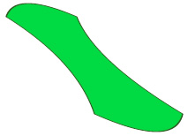

Vous avez toujours rêvé de faire du Flash, mais vous ne voulez pas acheter de logiciel à 700 $ ? Ce tutoriel est fait pour vous ! Le SVG, abréviation de "Scalable Vector Graphics" (graphiques vectoriels adaptables), est un langage simple qui permet de créer des dessins vectoriels avec rien de plus que... le Bloc-notes !
Comme je vous l'ai dit le SVG est basé sur le XML. Donc, tout document SVG doit toujours commencer par la déclaration XML, comme ceci :
<?xml version="1.0" standalone="no"?>
L'attribut standalone="no" indique que le document "ne se tient pas tout seul", il fait référence à des fichiers externes, entre autres une DTD. Une DTD est un fichier qui indique quelles balises ont le droit d'être utilisées, avec quels attributs, etc.
La DTD du SVG s'inclut avec la balise <!DOCTYPE>, comme ceci :
<!DOCTYPE svg PUBLIC "-//W3C//DTD SVG 1.1//EN"
"http://www.w3.org/Graphics/SVG/1.1/DTD/svg11.dtd">
Finalement, la balise externe, celle dans laquelle on écrira notre code SVG, est :
<svg>
...
</svg>
Elle a (au moins) 4 attributs :
xmlns, l'espace de nom du SVG (une page où trouver de l'information à son sujet) ;
version, la version du langage (nous apprenons le SVG 1.1) ;
Elle se place comme premier enfant de la balise <svg>. Le texte que vous écrivez entre les deux balises <title> sera le titre de votre fichier, qui s'affichera dans la barre de titre de votre navigateur si vous y ouvrez votre document seul.
La balise <defs>...</defs>
En SVG, on a souvent besoin de se référer à des objets, comme par exemple lorsqu'on utilise un dégradé. Dans ces cas-là, on inclut le dégradé dans la balise <defs>, et on le référence avec une URL lorsque l'on veut l'utiliser. Tout objet inclus dans <defs> ne sera pas dessiné directement à l'écran ; il devra être appelé.
La balise <g>...</g>
Cette balise est utilisée pour grouper des éléments, pour pouvoir plus facilement les manipuler en tant que groupe. On place ces éléments entre les balises <g> et </g>.
Exemple final :
<?xml version="1.0" standalone="no"?>
<!DOCTYPE svg PUBLIC "-//W3C//DTD SVG 1.1//EN"
"http://www.w3.org/Graphics/SVG/1.1/DTD/svg11.dtd">
<svg width="100%" height="100%" version="1.1"
xmlns="http://www.w3.org/2000/svg">
<title>Mon premier document SVG !</title>
<defs>
<!-- Ici, on inclura des éléments
que l'on veut réutiliser plusieurs fois,
comme des dégradés, des motifs, etc -->
</defs>
<g>
//Éléments à grouper
</g>
// Éléments seuls
</svg>
Remarquez les commentaires, que je vous encourage à utiliser pour rendre vos codes plus lisibles :
// [votre commentaire] : commentaire sur une ligne
<!-- [votre commentaire] --> : commentaire sur plusieurs lignes
Pour enregistrer ce document en SVG, copiez le code dans le Bloc-notes, et enregistrer en .svg.
Le langage SVG a été créé pour être utilisé sur le web. Comment ? Nous pouvons toujours linker depuis notre site web vers un fichier SVG, mais le mieux est d'"embeder" nos documents SVG dans une page web.
Pour ce faire, nous avons 2 méthodes à notre disposition :
la balise <embed> ;
la balise <object>.
La balise embed
Ce n'est pas une balise acceptée par le W3C, mais IE ne reconnaît pas <object> pour le SVG. On l'utilise ainsi :
codebase vers la page de téléchargement du plug-in.
La méthode
Que faire alors ?
On ne peut pas la valider complètement, mais pour la rendre la plus valide possible, on peut utiliser une imbrication. On va inclure <embed /> dans <object>, comme ceci :
Comme la page est lue de haut en bas, voilà les étapes effectuées :
si le navigateur reconnaît <object>, il l'affiche, sinon...
si le navigateur ne reconnaît pas <object> (comme IE), il l'ignore, continue de lire et rencontre <embed />, qu'il affiche.
Et voilà. Vous savez maintenant un peu mieux ce qu'est le SVG. Dans le prochain chapitre, nous ferons l'apprentissage des formes, composantes principales des documents SVG.
Logiquement, si height et width sont égales, un carré sera dessiné.
Comme vous le voyez, le rectangle est dessiné en noir, car c'est la valeur par défaut. Nous apprendrons à les colorier différemment dans le prochain chapitre, avec du CSS.
On peut aussi rajouter deux attributs, rx et ry, qui sont utilisés pour arrondir les coins du rectangle. Vous pouvez n'en mettre qu'un seul, car l'ordinateur met automatiquement la valeur de celui qui n'est pas défini égale à l'autre :
SI vous enregistrez ce code en SVG, et que vous l'ouvrez dans votre navigateur, vous verrez que le rectangle est colorié en noir, car il n'a aucun attribut de style. Nous apprendrons à styliser nos formes dans les prochains chapitres.
Une ligne brisée est un ensemble de droites reliées. C'est la balise <polyline /> qui permet de définir une ligne brisée. Cette fois, un seul attribut est requis : c'est points. Cet attribut indique les coordonnées de chaque point de la ligne brisée, séparées par des virgules et des espaces.
Ici, la ligne commencera au point (50,50) puis ira au point (200,100), etc., et finira au point (400,60).
Les polygones
Un polygone ressemble beaucoup à une ligne brisée. Comme elle, il n'a besoin que d'un attribut, points, qui indique les points du polygone. La seule différence est que le navigateur trace lui-même une ligne du dernier point vers le premier point, pour fermer le polygone. On le définit avec la balise <polygon />.
Le polygone commencerait au point (0,0), puis irait jusqu'au point (40,20), etc., irait jusqu'à (40,60), puis le navigateur tracera une ligne de (40,60), le dernier point vers (0,0), le premier point du polygone.
Un tracé est encore plus général qu'une ligne brisée. En effet, il permet non seulement de dessiner des droites, mais aussi des courbes. On l'introduit avec la balise <path />. C'est l'attribut d qui indique les commandes (lignes, courbes, etc.) à effectuer pour dessiner le tracé. Ces commandes sont très variées. Regardons-les en détails...
La commande moveto (M)
La commande moveto (move to, "bouger vers" en anglais) établit un nouveau point courant. (Je vous expliquerai plus tard ce que c'est.) On note :
...
<path d="M200,300" />
...
Ici, (200,300) sont les coordonnées du nouveau point courant à établir.
Quel est l'avantage des coordonnées relatives ?
Cela permet de réduire la taille de vos fichiers et à l'ordinateur de faire moins de calculs. Que du bon, quoi ! Je vous encourage donc fortement à utiliser les coordonnées relatives.
Les lignes
La commande lineto (L)
Elle trace une ligne du point courant vers un autre.
Point courant ? o_O Vas-tu enfin nous expliquer ce que c'est ?
C'est simplement la dernière coordonnée indiquée dans l'attribut d. Cela peut être soit un moveto, ou la fin d'une ligne, d'une courbe, etc.
Un exemple :
<path d="M100,100 l400,150"/>
Ce code tracera une ligne du point courant (100,100) vers le point (400,150).
Les commandes H et V
Elles sont utilisées pour dessiner des lignes horizontales (H) et verticales (V) seulement. Je vous encourage aussi à les utiliser car elles réduisent la taille de vos fichiers. Leur fonctionnement est similaire à lineto.
Pour fermer vos tracés (Z)
La commande closepath (Z) est un raccourci qui trace une ligne du point courant vers le point spécifié avec la dernière commande moveto. Il n'a besoin d'aucune coordonnée.
Vous remarquerez que j'ai utilisé des lineto horizontaux et verticaux, et que j'ai utilisé des coordonnées relatives, sauf pour le premier moveto bien entendu.
Les courbes
Les courbes sont un peu plus difficiles à comprendre. En effet, vous devez savoir quel type de courbe vous voulez dessiner. Et il en existe trois.
Les courbes quadratiques de Bézier (Q et T)
Une courbe quadratique de Bézier, ça ressemble à ça :
On introduit ce type de courbe avec la commande Q, qui trace une courbe à partir du point courant. Vous devez indiquer deux coordonnées :
un point de contrôle ;
le point de fin de la courbe.
Je vois déjà vos yeux s'écarquiller de terreur...
Point de contrôle ? !? o_O :o
Pas de panique, amis Zéros :) ! Je vais tout vous expliquer. Pour vraiment illustrer mes propos, je dirais qu'un point de contrôle est un point qui "tire" sur la courbe. Essayez le code suivant :
<path d="M200,200 q0,100 0,200"/>
Citation : Vous
"Oh l'horreur ! J'ai écrit q et ça me dessine une ligne !"
C'est tout à fait normal. En effet, le point de contrôle est situé sur la ligne imaginaire qui va du point courant vers le point de fin de courbe. Si vous changez les coordonnées du point de contrôle, celui-ci semble tirer la courbe vers lui.
Il existe une autre commande pour dessiner des courbes quadratiques : T. C'est une sorte de raccourci. En effet, vous devez seulement indiquer une coordonnée : le point de fin de la courbe. Le point de contrôle est calculé comme étant le point image selon une symétrie centrale du point de contrôle de la courbe q précédente.
Petit schéma pour les visuels :
Et un exemple :
<path d="M200,200 q200,100 0,200 t200,100" />
Les courbes cubiques de Bézier (C et S)
Là, c'est (un peu) plus compliqué ! :( Une courbe de Bézier cubique, comme ça :
est introduite avec une commande C, et a besoin de trois coordonnées :
un point de contrôle en début de courbe ;
un point de contrôle en fin de courbe ;
un point de fin de courbe.
Chaque point de contrôle tire sa moitié de la courbe vers lui.
Exemple :
<path d="M200,200 c200,100 -200,300 200,300" />
Il existe aussi une commande raccourcie, (qui se comporte comme T), mais pour les courbes cubiques ; c'est S. Vous devez indiquer seulement le deuxième point de contrôle et le point de fin de courbe, le premier point de contrôle étant l'image par symétrie centrale du deuxième point de contrôle de la courbe précédente.
Un arc elliptique, c'es une partie d'ellipse, comme ceci :
C'est la dernière commande que nous apprendrons, et probablement la plus compliquée, car elle nécessite six paramètres (je dis paramètres, car cette fois ce n'est pas seulement des coordonnées comme les autres commandes.) Les voici :
le rayon horizontal de l'ellipse ;
le rayon vertical de l'ellipse ;
l'angle de rotation de l'ellipse par rapport à l'horizontale (degré) ;
la valeur du drapeau-large de l'arc (0 ou 1) ;
la valeur du drapeau-balayage de l'arc (0 ou 1) ;
le point de fin de l'arc elliptique.
En code, ça fait comme ceci :
<path d="M200,450 a25,100 -30 0,1 50,-25 " />
Voici ce que le navigateur prend en compte pour dessiner un arc elliptique :
l'arc commence au point courant, et se termine au point de fin (la dernière coordonnée de la commande) ;
l'ellipse de l'arc a comme rayon les deux premiers paramètres de la commande (qui sont équivalents aux attribut rx et ry d'un élément <ellipse />) ;
l'ellipse est retournée du nombre de degrés indiqué avec le troisième paramètre.
Souvent, il advient que 4 arcs soient possibles, sur 2 ellipses différentes, avec ces indications seulement. C'est ici qu'interviennent les valeurs de drapeau-large et de drapeau balayage. Voilà un petit schéma que j'ai traduit (du W3C) :
Bon, je sais que ce chapitre était un peu moche, et décoloré, mais patience... le plus intéressant reste à venir ! :D Dans le prochain chapitre, vous apprendrez à ajouter de la couleur, pour égayer un peu vos formes.
Eh oui, on utilise le CSS pour ajouter du style aux formes SVG. Quelques propriétés CSS peuvent être utilisées en SVG, mais il existe aussi des propriétés propres à ce langage.
Mais voyons d'abord comment intégrer du CSS dans un document SVG...
Nous avons quatre possibilités :
utiliser une feuille de style externe ;
utiliser une feuille de style interne ;
utiliser des styles inline ;
utiliser des attributs.
(Presque) comme en xHTML, quoi ! ;) Voyons chacune de ces méthodes en détails...
Feuille de style externe
On rattache une feuille de style à un document SVG en incluant une déclaration XML de feuille de style :
juste après la déclaration XML du document, comme ceci :
<?xml version="1.0" standalone="no"?>
<?xml-stylesheet href="masuperfeuilledestyle.css" type="text/css"?>
<!DOCTYPE svg PUBLIC "-//W3C//DTD SVG 1.1//EN"
"http://www.w3.org/Graphics/SVG/1.1/DTD/svg11.dtd">
<svg width="800" height="800"
xmlns="http://www.w3.org/2000/svg" version="1.1">
<title>Exemple de feuille de style externe</title>
<rect x="200" y="100" width="600" height="300"/>
</svg>
L'attribut href pointe vers le chemin de votre feuille de style, ici masuperfeuilledestyle.css, qui serait comme ça :
rect
{
propriété: valeur;
propriété: valeur;
propriété: valeur;
}
Je vous conseille d'utiliser cette méthode si vous avez plusieurs documents SVG à styler de la même façon.
Feuille de style interne
Pour incorporer une feuille de style dans le document SVG lui-même, vous devez utiliser la balise <style>, mais attention : à l'intérieur de celle-ci, vous devrez écrire votre CSS entre <![CDATA[ et ]]>.
Mais pourquoi donc ? o_O !
En fait, c'est pour indiquer au navigateur que le texte qui suit n'est pas du SVG et n'a donc pas à être lu comme tel. Si vous ne rajoutiez pas ces caractères, le navigateur essaierait de lire le CSS comme étant du SVG et cela générerait tout plein d'erreurs !
Vous remarquerez que j'ai inclus <style> dans la balise <defs>. Ce n'est pas obligatoire, mais c'est sémantiquement souhaitable.
Je vous recommande d'utiliser cette méthode si vous avez beaucoup de formes à styler pareillement dans votre document.
Styles inline
Ici, c'est un attribut style que l'on rajoute à la balise à styler. C'est la méthode que j'utilise le plus souvent, car une forme SVG est souvent unique. Par exemple :
C'est une méthode plutôt longue qui consiste à mettre en attribut chaque propriété CSS. Je ne vous conseille pas de l'utiliser. On l'utilise généralement pour faire des retouches. Je vous l'apprends seulement pour que vous ne soyez pas trop déconcertés si vous la rencontrez. Je vous donne quand même un exemple, on ne sait jamais...
Pour l'instant, le trait a 1 pixel de large, car c'est sa valeur par défaut. Nous apprendrons à styliser les lignes plus particulièrement dans un prochain chapitre.
L'opacité
Vous pouvez changer la transparence du remplissage avec la propriété fill-opacity, et la transparence du trait avec la propriété stroke-opacity. Vous indiquez un nombre décimal entre 0 et 1.
Tout d'abord, sachez qu'il y a deux types de dégradés en SVG :
les dégradés linéaires, comme ceci :
et les dégradés radiaux, comme ceci :
Les dégradés linéaires
Inclure le dégradé
On inclut un dégradé linéaire dans la balise <defs>, avec la balise <linearGradient>. Celle-ci a 5 attributs : un id, et x1, y1, x2, et y2, qui servent à indiquer le sens (horizontal, vertical, diagonal) du dégradé. On indique ces valeurs en pourcentages.
Pour faire un dégradé horizontal, mettez des valeurs différentes pour x1 et x2 (0% et 100%) et des valeurs égales pour y1 et y2 (0%).
Pour faire un dégradé vertical, mettez des valeurs égales pour x1 et x2 (0%) et des valeurs différentes pour y1 et y2 (0% et 100%).
Pour faire un dégradé diagonal, mettez des valeurs différentes pour x1 et x2 et des valeurs différentes pour y1 et y2.
Concrètement, x1 et y1 sont les coordonnées du point de départ du vecteur du dégradé et x2 et y2, les coordonnées de son point de fin. Donc si vous voulez faire un dégradé incliné, comme ceci :
vous devrez mettre 0% à x1 et y1 et 100% à x2 et y2.
Les couleurs
Chaque couleur dans le dégradé est introduite à l'aide d'une balise <stop />. C'est son attribut offset qui détermine (en pourcentage) l'endroit dans le dégradé où la couleur est pure (non mélangée). On utilise le CSS pour déterminer la couleur ainsi que son opacité, à l'aide des propriétés stop-color et stop-opacity.
Reprenons notre exemple de tout à l'heure et ajoutons-lui des couleurs :
Ici, j'ai utilisé le dégradé avec fill, mais j'aurais aussi pu l'appliquer au trait de la forme, avec stroke.
Les dégradés radiaux
On introduit un dégradé radial avec la balise <radialGradient>, qui s'inclut elle aussi dans <defs>. Elle a 6 attributs :
fx, la coordonnée sur l'axe des x du centre du dégradé, où sera dessinée la couleur dont l'attribut offset est à 0%. Pour que votre dégradé commence au centre de votre forme, mettez 50% ;
fy, la coordonnée sur l'axe des y du centre du dégradé ;
cx, la coordonnée (ou le pourcentage) sur l'axe des x du centre du plus grand cercle (la couleur dont l'offset est à 100%) ;
cy, la coordonnée (ou le pourcentage) sur l'axe des y du centre du plus grand cercle ;
r, le rayon du plus grand cercle ;
Et l'id, bien sûr !
Vous devez mettre des valeurs en pourcentage (%) partout, sauf pour l'id.
Pour les couleurs et l'utilisation, c'est comme pour les dégradés linéaires :
(r="50%" fx="60%" fy="80%" cx="80%" cy="60%") Exercez-vous avec ces attributs, ça m'a pris à moi aussi un certain temps avant de les assimiler complètement.
Les motifs sont utilisés pour remplir une forme ou son trait avec une image se répétant. On introduit un motif dans la section <defs>, avec la balise <pattern>. Visuellement, un motif est en fait la répétition d'un rectangle à l'infini. <pattern> définit ce rectangle, donc ses enfants sont les éléments à inclure dans le rectangle.
Cette fois, 5 attributs :
x et y, les coordonnées du rectangle à répéter, que vous pouvez laisser à 0,0 ;
height, la hauteur du rectangle à répéter ;
width, la largeur de ce rectangle ;
patternUnits, (remarquez la casse) qui indique la façon de calculer les coordonnées pour les quatre attributs précédents. Vous devez indiquer userSpaceOnUse (attention à la casse encore une fois).
Par exemple, si je veux qu'un rectangle soit rempli avec un motif d'ellipse, je peux faire comme suit :
Ici, je l'ai utilisé avec la propriété fill, mais comme pour les dégradés, je peux aussi l'utiliser avec stroke.
Les bitmaps
Une utilisation intéressante des motifs est d'y inclure des images bitmap qui seraient trop longues, voir impossibles à coder en SVG, comme celle-là :
Dans ce cas, on doit inclure le fichier avec une balise <image />, qui a cinq attributs :
x, position de l'image sur l'axe des x ;
y, position de l'image sur l'axe des y ;
height, hauteur de l'image ;
width, largeur de l'image ;
[préfixe]:href, la source de l'image.
La seule particularité est [préfixe]:href. En effet, le SVG seul ne permet pas totalement de lier des fichiers. Pour cela, il faut utiliser XLink, un langage qui sert justement à faire des liens entre des fichiers XML. Il faut par conséquent rajouter un namespace à la balise <svg> externe, comme ceci (troisième ligne) :
Vous n'êtes pas obligés d'écrire "xlink" comme préfixe, pourvu que vous fassiez attention à l'appeler correctement pour l'attribut href de <image />. Personnellement, je trouve que c'est plus sensé.
L'exemple précédent donnerait ce résultat dans Internet Explorer :
Et voilà ! Vous pouvez maintenant dessiner de belles formes pleines de couleurs ! :D
Théoriquement, une animation est le changement de la valeur d'un attribut, ou d'une propriété CSS, au cours du temps.
La première balise que je vous présente est <animate />, car c'est la plus polyvalente. Elle a un grand nombre d'attributs, et je crois que la meilleure façon de vous les présenter est de partir d'un exemple concret.
On fait appel, comme pour les images bitmaps, à XLink. On indique, avec un attribut xlink:href, l'id de la balise-cible de l'animation, ici "rectangleQuiBouge", précédé d'un dièse (#) :
Maintenant, comment allons-nous faire savoir que c'est l'attribut x de notre rectangle dont nous voulons changer la valeur ?
2 - Pour indiquer l'attribut ou la propriété-cible de l'animation
Cette fois, nous aurons recours à deux attributs de la balise <animate />. Le premier est attributeName. On lui donne comme valeur le nom de l'attribut ou de la propriété CSS dont nous voulons faire changer la valeur. Dans notre exemple, on mettrait donc :
Mais il faut aussi mettre un deuxième attribut, attributeType. Comme valeur, vous mettez CSS si la valeur de attributeName est une propriété CSS, et vous mettez XML si, comme dans notre exemple, c'est un attribut d'une balise SVG. On aurait donc :
<animate /> permet de changer la valeur d'un attribut seulement. Si vous vouliez faire une translation diagonale, il vous faudrait changer et x et y ; vous auriez donc deux balises <animate /> à créer.
3 - Pour indiquer les valeurs de début et de fin de l'attribut (ou la propriété) cible
La prochaine chose à faire est de faire savoir au programme que nous voulons que notre rectangle parte du point (60,30) pour se rendre au point (200,30). Pour ce faire, nous aurons recours aux attributs from et to de la balise <animate />. Pour from (de, en anglais), vous indiquez la valeur de départ de x (pour nous 60), et dans to (vers, en anglais), vous indiquez la valeur de fin de x (pour nous 200) :
Si vous essayez ce code, il ne se passe toujours rien. Pourquoi ? Car, entre autres, vous n'avez pas spécifié quand l'animation doit commencer.
4 - Pour contrôler la synchronisation de l'animation
I - Le début de l'animation
Prochaine étape : indiquer le début de l'animation. Nous allons réaliser ceci grâce à l'attribut begin (en anglais, commencement). Il existe plusieurs façons d'indiquer le début d'une animation, mais commençons par la plus simple. Il s'agit ici d'indiquer un temps par rapport à la fin du chargement (loading) de votre document SVG par le programme. Pour indiquer un temps, vous pouvez utiliser trois syntaxes différentes :
Ici, l'animation commencerait 3 heures, 25 minutes, 4 secondes et 235 millisecondes après la fin du chargement de votre document. ( :lol: ) Inutile de vous dire que cette méthode n'est pas utilisée très souvent.
mm:ss.ms (minutes:secondes.millisecondes) Même principe que la façon précédente, mais sans les heures. Pas très utilisée non plus.
Finalement, vous pouvez simplement indiquer, par exemple, 2min, ou 3s, ou 769ms. C'est la méthode la plus utilisée. Vous pouvez aussi écrire 0s si vous voulez que votre animation commence dès la fin du chargement du document.
Pour en revenir à notre rectangle, on aurait donc :
Si vous essayez ce code, ça ne marche toujours pas. Il manque encore un attribut essentiel.
II - La durée de l'animation
Il faut faire savoir au programme en combien de temps le rectangle doit se déplacer du point (60,30) vers le point (200,30). On fait ceci avec l'attribut dur (abréviation de duration, durée en anglais). On indique un temps, comme on a appris à le faire avec begin :
Et voilà ! Notre beau rectangle se déplace tout seul ! Le seul inconvénient, c'est qu'il revient à son point de départ à la fin de l'animation :( . C'est ce que vous vouliez ? Pas de problème :) . Sinon, voyons comment y remédier ;) .
III - L'attribut fill
L'astuce est de rajouter à la balise <animate /> un autre attribut, fill, avec une valeur de freeze. Cela aura l'effet de "geler" l'animation en position finale (d'où le freeze, geler en anglais). Par exemple, pour que notre rectangle reste en position à la fin de sa translation, nous écririons :
La valeur par défaut de fill est remove. L'effet obtenu serait exactement le même que si on ne mettait pas d'attribut fill du tout : notre rectangle ferait sa translation, puis reviendrait à son point de départ.
Et voilà ! Vous venez de terminer votre première animation ! ;)
Mais nous sommes loin d'avoir exploré toutes les possibilités que <animate /> nous offre !
V - L'attribut end
C'est un attribut qui sert à indiquer, à l'aide d'un temps, la fin de l'animation.
Mais... la fin de l'animation est calculée comme étant begin + dur, non ? o_O
En effet. Si vous indiquez dans end une valeur plus petite que begin + dur, l'animation stoppera à ce moment-là. Bon. Je comprends que vous ne voyiez pas vraiment l'utilité de end pour l'instant, mais... patientez. Cette balise nous sera utile très bientôt. Sachez seulement qu'elle peut arrêter l'animation.
IV - Autres manières d'indiquer le début ou la fin d'une animation
Je vous ai dit plus tôt qu'il y avait plusieurs façons d'indiquer le début d'une animation, avec l'attribut begin. Nous allons maintenant en voir trois supplémentaires.
Synchronisation sur d'autres animations La première méthode que je vous montre ici consiste à indiquer le début d'une animation par rapport au début ou la fin d'une autre animation. Dans ce cas-là, il faudra donner un id à l'animation de référence. Dans begin, on écrirait, par exemple :
Cela aurait pour effet de commencer l'animation 2 secondes après la fin de l'animation dont l'id est "animationDeReference".
Le .end signifie la fin de l'animation. Vous pourriez aussi écrire .begin, ce qui voudrait dire de calculer à partir du début de animationDeReference.
Et vous n'êtes pas obligés d'écrire le +2s. Si vous n'écrivez que animationDeReference.end, cela aurait pour effet de commencer l'animation immédiatement à la fin de animationDeReference.
Bon. Je crois qu'il est temps pour un petit TP. Vous allez ajouter à notre fichier rectangle un cercle rouge au trait orange, de rayon 15 et situé à (50,70). Ce cercle fera une translation verticale de 100 pixels vers le bas. Cette animation commencera 3 secondes après le début de la translation du rectangle.
Êtes-vous prêts ? ... Attention ! 3, 2, 1, à vos Bloc-notes !
Cette méthode vous sera utile si vous avez plusieurs animations qui doivent se déclencher, par exemple, à 2 secondes d'intervalle. Avouez qu'il est plus facile d'écrire id.end+2s que de calculer à la main chaque temps de début. ;)
Synchronisation sur des événements souris La deuxième méthode dont je vous parle est encore plus intéressante. Elle permet de commencer (avec begin) ou de terminer (avec end) une animation par rapport à un événement. Par événement, j'entends toute action de la souris : lorsqu'on clique sur une forme, lorsqu'on en survole une autre, etc.
Le principe est le même que pour la méthode précédente : vous devez indiquer dans begin ou dans end un id de référence, suivi d'un point (.) et finalement d'un événement :
<animate ... begin="id.evenement+2s" ... />
Il y a plusieurs événements différents. Les voici :
click : survient quand la souris clique sur la forme de référence ;
activate : même chose que click ;
mousedown : survient quand le bouton de la souris est enfoncé sur la forme ;
mouseup : survient quand le bouton de la souris est relâché sur la forme ;
mouseover : survient quand la souris survole la forme ;
mouseout : survient quand le curseur de la souris "sort" du dessus de la forme ;
mousemove : survient quand la souris bouge alors qu'elle était sur la forme.
Deuxième petit TP : vous reprenez votre fichier du rectangle et du cercle et vous le modifiez pour que l'animation du cercle commence lorsque la souris survole le rectangle. Vous faites aussi en sorte que l'animation du rectangle stoppe lorsque l'on clique sur le cercle.
Et voilà ! Vous auriez aussi pu utiliser activate à la place de click, dans l'attribut end du rectangle.
Synchronisation sur des événements clavier Il est aussi possible de faire commencer (mais pas terminer) une animation lorsque l'utilisateur appuie sur une touche particulière du clavier.
Pour ce faire, la syntaxe à utiliser dans begin est la suivante : begin="accesKey(touche)".
accesKey est en anglais et signifie "touche d'accès". Facile, non ? Bien sûr, à la place de touche, vous mettez la touche du clavier à appuyer pour commencer l'animation : s, w, 8, ?, ou ce que vous voulez :
Ici, la translation commencerait lorsque l'on appuierait sur la touche "y".
V - L'attribut restart
Cet attribut peut prendre trois valeurs :
always (valeur par défaut) : l'animation peut être recommencée à tout moment ;
never : l'animation ne peut jamais être recommencée ;
whenNotActive : l'animation ne peut être recommencée que lorsqu'elle est terminée.
Si vous reprenez votre fichier "Rectangle et cercle qui bougent et interagissent !", et que vous ajoutez restart avec la valeur whenNotActive dans l'animation du cercle, comme ceci :
vous verrez que même si vous survolez le rectangle, vous ne pouvez pas recommencer l'animation du cercle si elle n'est pas terminée.
Conclusion
Et voilà. Je sais que cette sous-partie était un gros morceau, car nous avons vu plusieurs choses d'un coup. Mais ne vous inquiétez pas, nous allons réutiliser une très grosse majorité des attributs que nous venons de voir pour les autres balises d'animation.
Contrairement à <animate />, elle ne peut pas calculer et dessiner les valeurs comprises entre les valeurs de début et de fin de son attribut-cible, et elle n'a donc pas d'attribut dur.
Quelle est donc son utilité, me direz-vous ?
La plupart du temps, elle est utilisée pour cacher une forme ou l'afficher. Pour ce faire, on utilise une propriété CSS, visibility, qui peut avoir trois valeurs :
visible : la forme est affichée ;
hidden ou collaspe : la forme est cachée, elle n'est pas dessinée.
Appuyer sur le triangle jaune "cachera" la forme, alors que cliquer sur le bleu l'affichera. Bien sûr, vous n'êtes pas obligés d'utiliser des événements dans begin. Un temps fonctionnerait aussi.
Comme vous voyez, on a utilisé les mêmes attributs que pour <animate />, ce qui sera aussi le cas, à peu de choses près, pour les trois autres balises d'animation.
Dans la première partie de ce chapitre, nous avons réalisé une translation simple : un seul attribut de notre rectangle était modifié. Je vous avais dit que si vous vouliez faire une translation diagonale, vous auriez à insérer deux balises <animate />.
Mais imaginez que vous vouliez faire effectuer une translation comportant des courbes... Il vous serait impossible de le faire avec <animate />. C'est pourquoi il existe une balise qui permet ce genre de translation : <animateMotion /> (motion veut dire mouvement en anglais).
Elle est un peu différente, par contre. Entre autres, elle introduit un nouvel attribut : path. C'est grâce à lui que l'animation pourra se déplacer sur des courbes. En effet, nous allons écrire dans cet attribut un tracé, comme on a appris à le faire dans le chapitre Les formes. C'est sur ce tracé que notre forme se déplacera. (On l'appellera alors tracé de mouvement.) Il n'y aura donc pas d'attributs from et to, ni d'attributeName et d'attributeType. Par contre, nous utiliserons begin et dur, comme avec <animate /> :
Ici, j'ai inclus un tracé au début de mon code, pour que l'on voie mieux comment la forme bouge.
Et c'est également le premier moveto de triangleQuiBouge qui se déplace sur le tracé. Si c'était un rectangle, ce serait son coin supérieur gauche (indiqué avec x et y), et si c'était un cercle ou une ellipse, ce serait son centre (coordonnées indiquées avec cx et cy).
La balise <mpath />
Supposons que vous vouliez faire effectuer le même tracé de mouvement à plusieurs formes. Bien sûr, vous pourriez indiquer le même tracé de mouvement dans les attributs path des balises <animateMotion /> de toutes nos formes, comme ceci :
Mais il existe une autre méthode, qui diminuera la taille de vos fichiers. Nous n'allons pas inclure d'attribut path dans nos balises <animateMotion />. Par contre, nous allons ajouter une balise fille <mpath /> à chacune de nos quatre balises <animateMotion />. Elle deviendront alors des balises doubles : <animateMotion>...</animateMotion>.
Les balises <mpath /> n'auront qu'un seul attribut, xlink:href. Comme valeur, vous mettrez l'id d'un tracé que vous inclurez dans <defs>, précédé d'un dièse.
Il ne faudra donc pas oublier de rajouter le namespace de XLink dans la balises <svg>. (Si vous ne vous souvenez plus de XLink et des namespaces, allez relire la sous-partie sur les motifs du chapitre précédent, lorsque je parle des images bitmap.)
Vous avez sûrement remarqué que les formes de l'exemple précédent restent droites alors qu'elles se déplacent sur son tracé de mouvement. <animateMotion /> a un attribut pour contrôler ce comportement : rotate. Sa valeur par défaut est de 0, et c'est pourquoi les formes ne s'inclinent pas. Si vous mettez un autre angle que 0 comme valeur de rotate, vous verrez que la forme sera inclinée de la valeur de rotate alors qu'elle se déplace sur le tracé de mouvement.
Mais l'utilité de rotate ne s'arrête pas là. On peut aussi indiquer une valeur de auto. Dans ce cas, la forme pivotera d'elle-même sur son tracé de mouvement au fur et à mesure qu'elle rencontre des courbes.
Au lieu de auto, vous pouvez aussi mettre auto-reverse. Dans ce cas, si on reprend notre code précédent, vous verrez que le rectangle pivote de l'autre côté de la courbe :
Nous allons maintenant voir un nouvel attribut, valable pour les cinq balises d'animation. J'aurais pu vous le montrer dans la première partie de ce chapitre, mais je pense que c'était un assez gros morceau pour vous.
Nous allons voir comment gérer la répétition des animations. Pour qu'une animation se répète, on aura recours à l'attribut repeatCount. Vous devez indiquer un nombre qui sera le nombre de fois que l'animation sera répétée. (On appelle cela le nombre d'itérations de l'animation.) Si vous voulez que l'animation se répète à l'infini, vous mettez indefinite.
Bien que <animate /> permette de faire certains changement de couleurs, ce n'est pas bien interprété par les programmes.
C'est pourquoi il existe une balise juste pour les changements de couleurs, <animateColor />. Elle fonctionne exactement de la même façon que <animate /> :
La couleur de remplissage du polygone passera ainsi de orange à magenta en 10 secondes.
C'est pas mal, tout ce que j'ai à dire sur <animateColor /> ! :lol:
values et keyTimes
Par contre, c'est l'occasion pour nous d'apprendre deux nouveaux attributs, valables pour toutes les balises d'animations, excepté <animateMotion />.
Je vous parle ici premièrement de l'attribut values. Il sert à indiquer plus qu'une valeur pour l'attribut cible de l'animation. On pourrait donc faire passer le remplissage de notre forme de orange à violet, puis à rouge, et enfin à bleu, tout ça dans la même animation.
Dans values, vous indiquez les différentes valeurs que vous désirez assigner à la propriété-cible, séparées par des points-virgules (;).
Il existe un attribut pour permettre de contrôler plus facilement à combien de temps les différentes valeurs de values doivent apparaître.
Si vous vouliez par exemple, que le polygone soit déjà violet après deux secondes, puis qu'il soit rouge à six secondes et complètement bleu à dix, vous auriez recours à l'attribut keyTimes.
À l'intérieur de celui-ci, c'est encore des valeurs séparées par des points-virgules que vous mettrez, mais cette fois des valeurs de temps. Par contre, ce sont des valeurs de temps relatives à l'animation ; la première valeur doit être 0, qui équivaut à la première valeur de values, lorsque l'animation est à 0%, et la dernière valeur doit être 1, qui équivaut à la dernière valeur de values, lorsque l'animation est à 100%. Entre les deux, vous indiquez des nombres à virgules ; 0.2 pour 20% de l'animation, 0.7 pour 70% de l'animation.
Pour en revenir à mon exemple, c'est-à-dire que le polygone soit violet à deux secondes, puis orange à six et bleu à dix, on écrirait :
La balise d'animation <animateTransform /> sert à effectuer des transformations géométriques.
<animateTransform /> aussi fonctionne exactement de la même manière que <animate />. Je ne vous apprendrai donc presque rien de nouveau sur les animations. Par contre, l'attribut dont nous allons modifier la valeur dynamiquement, avec <animateTransform />, est, lui, nouveau.
Je parle ici de l'attribut transform. Il peut s'appliquer à toutes les formes que nous avons apprises jusqu'à maintenant, ainsi qu'aux groupes d'éléments. transform permet d'effectuer cinq transformations différentes, que nous allons voir :
translation ;
homothétie ;
rotation ;
inclinaison (sur l'axe des x ou celui des y).
Avant de nous pencher dessus, voilà approximativement ce que vous devriez déjà avoir pour essayer les animations :
Il n'en a pas car il n'en a pas besoin. En effet, nous allons modifier sa valeur par défaut, et tout se fera dans <animateTransform />
Translation
Mais... on a déjà fait des translations dans la première partie de ce chapitre, non ?! Pourquoi apprendre une autre façon ?
Pour vous éviter d'avoir à faire des tracés de mouvements à chaque fois que vous voulez faire faire des translations simple à un tracé. (J'entends par translation simple toute translation verticale, horizontale ou diagonale.) En effet, un tracé n'a pas d'attribut x et y, ni rien d'équivalent. On ne pourrait donc pas utiliser <animate />.
Pour vous éviter d'avoir à écrire deux balises <animate /> à chaque fois que vous voulez faire faire une translation diagonale à une forme. transform fera cela avec une seule balise <animateTransform />.
Pour faire effectuer une translation à notre tracé, nous allons d'abord placer dans <animateTransform /> le type de transformation voulue (en anglais bien sûr), à l'aide de l'attribut type :
Bien sûr, vous n'êtes pas obligés d'utiliser transform uniquement pour faire des animations. En effet, cela peut être utile pour faire des ajustements. (Décaler des formes par rapport à leur positions plutôt que changer leurs attributs x et y.) Dans ce cas, c'est dans l'attribut transform des formes que vous devrez indiquer le type, suivi du vecteur de la translation entre parenthèses :
Une homothétie est l'agrandissement ou le rétrécissement d'une forme. Pour faire effectuer une homothétie à une forme, vous devez indiquer scale dans l'attribut type de <animateTransform />, et attention : dans from, vous devez indiquer 1, car 1 signifie 100% de la forme actuelle. Tandis que dans to, vous indiquez le facteur d'homothétie :
soit une valeur entre 1 et 0, comme par exemple 0.5, ce qui diminuera la forme de 50%.
Avec ces deux animations, la forme garde ses proportions. Mais vous pouvez aussi la déformer ! Dans ce cas, la valeur de to aura la forme de facteurDHomothétieX,facteurDHomothétieY. Dans les deux exemples précédents, c'est comme si vous aviez seulement indiqué facteurDHomothétieX. Le programme prend alors pour acquis que facteurDHomothétieY est égal à facteurDHomothétieX.
Mais rappelez-vous le cours de maths... l'homothétie se faisait à partir d'un point de référence... Or, on n'a nulle part indiqué ce point...
En effet, le SVG ne gère pas complètement l'animation d'homothéties. Toutes les homothéties sont donc calculées à partir de (0,0). Espérons qu'une prochaine version introduira cette fonctionnalité manquante. (Mais soyons francs, je crois que cela ne vous dérange pas trop, et moi non plus ! :p )
Dans transform...
Encore une fois, il est possible d'utiliser l'homothétie directement dans la forme. La syntaxe est la même que pour translate :
Par contre, cette méthode permet de faire une homothétie à partir d'un autre point que (0,0). L'astuce est de faire subir une translation à la forme, avec comme vecteur le point d'homothétie désiré, effectuer l'homothétie, puis faire la translation inverse. Pour réaliser ceci, nous allons mettre dans transform plusieurs commandes de transformation, espacées par des espaces. (J'ai l'impression de me répéter... :-° )
Poure faire faire une rotation à une forme, c'est rotate que vous devrez écrire dans type. from et to indiqueront des angles : vous mettrez donc 0 dans from et l'angle de rotation voulu dans to.
Encore une fois, la rotation s'effectue par défaut à partir de (0,0), mais contrairement à l'homothétie, on peut, cette fois, indiquer un point de rotation différent. Nous allons placer une virgule juste après l'angle de rotation, puis indiquer le point de rotation désiré :
Une inclinaison est un peu plus difficile à expliquer. Et puisqu'une image vaut mieux qu'un long discours...
Inclinaison sur l'axe des x
Un exemple imagé d'inclinaison sur l'axe des x :
->

On voit bien que la forme est inclinée. Cette inclinaison se mesure en degrés, c'est donc des angles que nous mettrons comme valeur de from et de to. Vous mettez 0 dans from et l'angle d'inclinaison dans to. L'angle d'inclinaison peut être schématisé comme suit :
Notez que les deux côtés de l'angle x passent par le milieu des deux formes, perpendiculairement à l'axe des x.
Pour effectuer une inclinaision sur l'axe des x, c'est skewX qu'il faudra mettre dans l'attribut type de <animateTransform />.
Pour faire l'inclinaison des images, il faudrait écrire :
stroke-linecap est une propriété qui sert à indiquer la façon dont est dessinée la fin d'une ligne, d'une ligne brisée, ou d'un tracé. Trois valeurs sont possibles :
butt (valeur par défaut) : la ligne s'arrête à ses extrémités (normal, non :p ) :
round : un cercle est dessiné aux extrémités de la ligne :
Note : ce cercle est centré à la coordonnée de début ou de fin de la ligne, et son rayon est égal à la valeur de la propriété stroke-width de la forme divisée par 2 ;
square : un carré est dessiné aux extrémités de la ligne :
Note : le carré est centré à la coordonnée de début ou de fin de la ligne, et son côté est égale à la valeur de la propriété stroke-width.
stroke-linejoin
Cette propriété spécifie comment seront dessinés les angles aigus d'un rectangle, d'un polygone, d'une ligne brisée ou d'un tracé. Encore une fois, trois valeurs possibles :
bevel : les angles sont tronqués :
round : les angles sont ronds :
miter (valeur par défaut) : les angles sont pointus :
Mais... o_O Un seul des angles est pointu ! Les deux premiers sont tronqués ! :( Pourquoi donc ? :o Moi, je m'attendais à ça :
...
stroke-miterlimit
Ce comportement est dû à la valeur par défaut d'une autre propriété : stroke-miterlimit, qui est fixée à 4.
Si vous examinez bien cette image,
vous pouvez voir que les pointus des 2 premiers angles se prolongent bien plus loin que la valeur de la propriété stroke-width (ici fixée à 8).
C'est pour cette raison que les créateurs du SVG ont introduit la propriété stroke-miterlimit. Si vous l'ajoutez au style de votre forme et que vous lui mettez une valeur plus grande que 4 (par exemple 10) :
les angles seront pointus jusqu'au bout, comme ceci :
stroke-dasharray
C'est la dernière propriété de trait dont je vous parle, et elle est ma foi très intéressante. Son nom signifie, en anglais, "tableau des tirets de la ligne", et c'est elle qui nous permettra de faire des tiretés et des pointillés avec nos lignes.
Tiretés L'utilisation de stroke-dasharray est un peu plus compliquée que les autres. Il y plusieurs façons d'indiquer sa valeur, mais commençons par la plus simple : vous allez mettre deux chiffres, séparés par une virgule.
Le premier chiffre indique la longueur du premier trait, le second chiffre, celui du premier espace. Le trait et l'espace sont ensuite répétés le long de la ligne.
Pour vous aider à bien assimiler, voici un code et son résultat, zoomé et annoté :
Résultat du code (les cercles rouges indiquent où devraient se terminer les tirets si stroke-linecap était fixé à butt) :
Vous pouvez voir que les ronds augmentent la longueur des tirets, et empiètent dans les espaces, donc diminuent la longueur de ceux-ci.
Pour vous aider à avoir les longueurs que vous désirez vraiment, voici donc les calculs à faire lorsque vous utilisez stroke-dasharray et stroke-linecap avec round ou square :
pour les tirets : longueur voulue - valeur de stroke-width (car il faut additionner les 2 moitiés de stroke-width aux deux extrémités du tiret) ;
pour les espaces : longueur voulue + valeur de stroke-width.
Pointillés Bien entendu, pour faire des pointillés sur une ligne, il faudra mettre stroke-linecap à round. Ensuite, les plus futés d'entre vous auront compris que nous allons mettre 0 comme première valeur de stroke-dasharray, et que nous allons laisser stroke-linecap dessiner ses deux moitiés de cercle qui formeront un cercle complet.
Donc, pour remédier à ce problème, que notre code soit compatible IE et FF et que nos cercles aient vraiment l'air de cercles, nous n'allons pas écrire 0 comme première valeur de stroke-linecap. Mais nous allons écrire un nombre décimal très proche de 0, comme par exemple 0.01 !
C'est tout ce que nous avons vu jusqu'à maintenant. Voyons maintenant une nouvelle propriété ! :D
fill-rule
fill-rule vous sera utile pour les polygones, les lignes brisées et les tracés. Elle sert à indiquer comment sera dessiné le remplissage d'une forme lorsqu'elle se coupe elle-même, ou lorsqu'un tracé possède des sous-tracés (quand vous avez plusieurs movetos dans votre tracé).
Deux valeurs sont possibles :
nonzero
evenodd
L'algorithme mathématique qui spécifie si chaque point est en-dedans ou en-dehors du tracé est assez compliqué, c'est pourquoi je ne vous en fais pas part ici. Exemples d'utilisation Ce code :
Je vous recommande simplement d'essayer les deux valeurs, et si vous n'obtenez pas le résultat espéré avec les deux propriétés, essayez d'échanger les points de début et de fin de vos lignes et de vos courbes. Par exemple, ce code :
Comme je vous l'ai annoncé en introduisant le chapitre, les marqueurs nous permettront de faire des pointes de flèches à la fin et au début de nos lignes.
Mais les marqueurs ne nous permettent pas seulement de dessiner des flèches, car en fait, un marqueur est simplement une forme qui est dessinée au début ou à la fin d'une ligne. Vous pourrez donc dessiner des marqueurs en cercle, en losange, ou en coeur si ça vous chante ! :lol: Allons-y sans plus tarder !
Comme un marqueur est un élément que vous allez sûrement utiliser plusieurs fois dans votre document, j'espère que vous vous doutiez que nous allons le placer dans la balise <defs>.
Qu'allons-nous placer dans <defs> ?
Premièrement, nous allons placer une balise de marqueur, dans laquelle vous placerez la forme que vous voulez voir se dessiner à la fin de votre ligne. Cette balise est : <marker>...</marker>. Ce qui nous donne donc ça :
Je place déjà la ligne à laquelle nous allons associer le marqueur tout à l'heure.
La première chose à faire est d'ajouter un id au marqueur, pour pouvoir l'appeler dans notre ligne, à l'aide de la propriété marker-end. Elle aura pour effet de dessiner le marqueur à la fin de la ligne. Comme valeur, vous indiquez une référence d'URL vers l'id du marqueur.
Je diminue de moitié son opacité pour pouvoir mieux la distinguer de notre ligne plus tard.
Ensuite, nous devons indiquer la taille du marqueur. Pour ce faire, nous allons rajouter deux attributs à notre balise <marker> : markerWidth, la largeur du marqueur et markerHeight, la hauteur du marqueur.
Dans notre cas, le marqueur mesure 10*10 pixels, on écrira donc :
Mais il nous faut tout de suite rajouter un autre attribut, markerUnits, qui servira à indiquer comment calculer les valeurs de markerWidth et de markerHeight. Deux valeurs sont possibles, mais pour l'instant nous allons mettre userSpaceOnUse.
Vous pouvez essayer ce code, mais vous verrez qu'il manque encore quelques ajustements.
Résultat du code, zoomé (le cercle rouge indique le point de fin de la ligne) :
Le marqueur n'est pas orienté dans le sens de la ligne
Le marqueur n'est pas centré sur la ligne
Pour remédier à la rotation du marqueur, nous allons ajouter un autre attribut à <marker>, orient, avec une valeur de auto. Ceci aura pour effet de l'orienter dans le sens de notre ligne :
Finalement, pour que notre marqueur soit centré sur notre ligne, nous allons utiliser deux autres attributs de <marker>, refX et refY. Ces deux attributs vont indiquer la coordonnée dans la boîte du marqueur qui doit s'aligner exactement avec le point de fin de ligne. Dans notre cas, ce point est (0,5), on va donc écrire :
Remarquez que le point de référence (refX,refY) n'est pas le même pour le cercle, car je désire que ça soit son centre qui soit aligné avec le point de début de ligne :
Utilisation de markerUnits avec strokeWidth
Si on reprend notre code de tout à l'heure, et que nous lui rajoutons une deuxième ligne avec une valeur de stroke-width différente, que l'on associe aussi au marqueur,
vous pouvez voir que le marqueur reste de la même grandeur pour les deux lignes. Il serait intéressant qu'il change de grosseur en fonction de la propriété stroke-width de la forme.
C'est possible en modifiant la valeur de l'attribut markerUnits du marqueur. Nous allons fixer sa valeur à strokeWidth, ce qui aura pour effet de multiplier les attributs markerHeight, markerWidth, refX, refY, ainsi que le contenu du marqueur par la valeur de la propriété stroke-width de la forme à laquelle le marqueur est associé.
Seulement voilà : à présent, nous n'avons plus la même proportion entre le marqueur et la ligne que lorsque nous mettions markerUnits à userSpaceOnUse, car le marqueur, d'une certaine façon, a été dessiné pour userSpaceOnUse.
Pour remédier à ce problème, donc "convertir" notre marqueur de userSpaceOnUse à strokeWidth, il faut diviser les valeurs de markerHeight, markerWidth, refX, refY ainsi que toute les coordonnées de la forme à l'intérieur du marqueur, par la valeur de stroke-width de la ligne à laquelle le marqueur était associé (alors que l'attribut markerUnits était à userSpaceOnUse). (On peut arrondir 2 chiffres après la virgule.)
Allez, un petit exercice en terminant. :) Allez revoir le marqueur en cercle que j'ai utilisé pour vous montrer la propriété marker-start, et "convertissez-le" en strokeWidth.
Si vous voulez vous exercer encore plus, inventez vos propre marqueurs ! ;) Quelques idées : flèches plus effilées, coeur, pique, losange, carré... Les possibilités sont infinies !
Et voilà ! Vous avez maintenant de belles formes colorées et stylisées ! :D
La première chose que j'ai à vous dire à propos du texte en SVG est malheureusement une mauvaise nouvelle : le SVG ne gère pas les blocs de texte. :(
En xHTML, nous avons la balise <p> : on peut y écrire autant de texte que l'on désire, puis on lui indique une largeur et une hauteur à l'aide du CSS, et le texte est automatiquement placé pour entrer dans ce bloc.
Ce concept est absent du SVG 1.1 : il ne gère le texte que sur une seule ligne. Heureusement, nous apprendrons une technique pour contourner cette lacune :) , et encore plus heureusement, la prochaine version du SVG, 1.2, devrait corriger cela ! :D
Comme je vous l'ai dit, le SVG ne gère actuellement que le texte sur une ligne.
Voyons donc comment ajouter des lignes de texte dans nos documents !
Un texte simple
La balise à utiliser pour ajouter du texte est... <text> !
...
<text>Du texte en SVG !</text>
...
Bien sûr, rien ne s'affiche car nous n'avons pas indiqué de position pour notre texte. C'est donc ce que nous allons faire, à l'aide des attributs x et y de la balise <text> :
...
<text x="300" y="250">Du texte en SVG !</text>
...
Le point (x,y) indique le point en bas à gauche de la première lettre du texte :
C'est tout ce que je vous montre au niveau SVG pour l'instant. Voyons maintenant tout plein de propriétés CSS pour colorier et styliser ce texte ma foi un peu fade !
Ici, pas de changement : ce sont exactement les mêmes propriétés que pour toutes les autres formes en SVG.
fill : couleur de remplissage stroke : couleur du trait
...
<text x="300" y="250" style="fill:yellow;stroke:#abcdef;">Du texte en SVG !</text>
...
Ici, on ne peut quasiment pas voir la couleur de remplissage, car le texte est trop petit.
Voyons donc comment augmenter sa taille !
Taille du texte
Cela se fera grâce à la propriété font-size. On lui met une valeur en pixels, mais cette fois il faudra écrire "px" (pour pixel) à la suite de la valeur numérique :
...
<text x="300" y="250" style="fill:yellow;stroke:#abcdef;font-size:50px;">Du texte en SVG !</text>
...
Italique
On met un texte en italique avec la propriété font-style.
Comme valeur, on spécifie soit italic pour mettre le texte en italique, ou normal, qui est la valeur par défaut (pas de mise en italique), pour contrer l'héritage.
...
<text x="300" y="250" style="fill:yellow;stroke:#abcdef;font-size:50px;font-style:italic;">Du texte en SVG !</text>
...
Graisse du texte
(j'adore cette expression ! :p ) Pour indiquer si un texte doit être mis en gras ou non, on utilisera la propriété font-weight.
Encore une fois, deux valeurs possibles :
bold : met le texte en gras ;
normal (valeur par défaut) : pas de mise en gras (pour contrer l'héritage).
...
<text x="300" y="250" style="fill:yellow;stroke:#abcdef;font-size:50px;font-weight:bold;">Du texte en SVG !</text>
...
Bonjour, la police !
(ah le folklore québécois ! :D ...)(Ce titre ne parle qu'aux québécois ! :lol: ) Pour indiquer quelle police utiliser pour écrire un texte, c'est la propriété font-family qui nous sera utile.
À l'intérieur de celle-ci, vous devez indiquer une liste de polices.
Si la personne qui visionne votre document n'a pas la première police, son navigateur essaiera la deuxième, s'il ne l'a pas non plus, il essaiera la troisième, si... (enfin bref, vous voyez le concept ;) ).
On termine généralement la liste par le mot-clé serif, qui signifie : "Si tu n'as aucune des polices précédentes, utilise une police standard."
Mais le SVG fait mieux que le xHTML au moins sur un point : il permet d'incorporer nos propres polices ! (avec tout plein de jolis tracés ! :D ) Je vous parlerai peut-être des polices incorporées plus en détails dans un prochain chapitre.
Décoration du texte
En SVG, c'est la propriété text-decoration qui permet de décorer le texte.
Elle peut prendre deux valeurs :
none (par défaut) : aucune décoration ;
underline : le texte est souligné ;
line-through : le texte est barré ;
overline : une ligne est dessinée au-dessus du texte.
Par défaut, le point spécifié dans les attributs x et y de la balise <text> indique le point en bas à gauche de la première lettre du texte. Mais il est possible de changer cela, grâce à la propriété text-anchor. Les valeurs possibles pour cette propriété sont :
start (par défaut) : je viens de l'expliquer !
middle : le point (x,y) correspond au point du milieu de la chaîne textuelle ;
end : le point (x,y) désigne le point en bas à droite de la dernière lettre de la chaîne.
Voici quelques exemples, ainsi que leurs résultats :
Pour changer l'espacement des mots et celui des lettres, on utilise respectivement les propriétés word-spacing et letter-spacing. Elles demandent toutes deux des valeurs en pixels :
Pour commencer cette partie, je vous montre l'astuce permettant de faire du texte sur plusieurs lignes.
Certains de vous diront sûrement :
Citation : Zéros qui ne pensent pas à la sémantique
"Mais nous n'avons qu'à séparer notre texte en plusieurs balises <text>, que l'on positionne différemment à l'aide de leurs attributs x et y !"
Il est vrai que cette façon fonctionne, mais ce serait ne pas respecter la sémantique, car votre texte ne serait pas contenu entièrement dans la même balise.
C'est pourquoi il existe une balise <tspan> (t pour texte). C'est une balise fille de <text>. En fait, elles ont exactement les mêmes attributs. Pratiquement, chaque ligne de votre texte sera incluse entre deux balises <tspan> et </tspan>, auxquelles vous attribuerez des attributs "y" différents.
Exemple :
...
<text x="300" y="250" style="fill:yellow;stroke:#abcdef;font-size:50px;font-family:'Trebuchet MS', Verdana, serif;">
Du texte en SVG !
<tspan x="300" y="280" style="fill:black;stroke:none;font-size:30px;font-family:'Trebuchet MS', Verdana, serif;">
Et puis ce texte qui le suit,
</tspan>
<tspan x="300" y="310" style="fill:black;stroke:none;font-size:30px;font-family:'Trebuchet MS', Verdana, serif;">
inclus dans des balises <tspan>,
</tspan>
<tspan x="300" y="340" style="fill:black;stroke:none;font-size:30px;font-family:'Trebuchet MS', Verdana, serif;">
ce qui permet de faire plusieurs
</tspan>
<tspan x="300" y="370" style="fill:black;stroke:none;font-size:30px;font-family:'Trebuchet MS', Verdana, serif;">
lignes de texte en respectant</tspan>
<tspan x="300" y="400" style="fill:black;stroke:none;font-size:30px;font-family:'Trebuchet MS', Verdana, serif;">
la sémantique !
</tspan>
</text>
...
Analysons ce code depuis le début.
D'abord la balise <text>, qui contient la première ligne de texte, avec son style.
Ensuite, plusieurs balises <tspan> positionnées verticalement à 30 pixels l'une de l'autre, grâce à l'attribut y. Leur attribut style est identique.
Finalement, la balise </text>, qui referme le tout !
Mais il y a une petite chose que l'on pourrait améliorer pour rendre ce code encore plus lisible : chaque balise <tspan> a son propre attribut style, mais ils sont tous identiques ; cela ajoute beaucoup de lourdeur au code.
Néanmoins, ces attributs sont nécessaires, car sans eux les différentes lignes de texte prendraient le style de leur balise parente <text>, conformément à l'héritage, ce qui ne produirait pas le résultat voulu.
Nous allons donc ajouter une aute balise <tspan>, englobant toutes les autres. Nous lui donnerons un attribut style, et nous enlèverons tous les autres attributs style des balise <tspan> de lignes.
En l'absence d'attribut style, elles prendront le style de leur parente, qui ne sera pas en l'occurrence <text>, mais plutôt <tspan> :
...
<text x="300" y="250" style="fill:yellow;stroke:#abcdef;font-size:50px;font-family:'Trebuchet MS', Verdana, serif;">
Du texte en SVG !
<tspan style="fill:black;stroke:none;font-size:30px;font-family:'Trebuchet MS', Verdana, serif;">
<tspan x="300" y="280">
Et puis ce texte qui le suit,
</tspan>
<tspan x="300" y="310">
inclus dans des balises <tspan>,
</tspan>
<tspan x="300" y="340">
ce qui permet de faire plusieurs
</tspan>
<tspan x="300" y="370">
lignes de texte en respectant</tspan>
<tspan x="300" y="400">
la sémantique !
</tspan>
</tspan>
</text>
...
Mais il reste encore une dernière chose à améliorer avec ce code. En effet, on utilise des positions absolues pour indiquer les positions de chaque ligne. Si on change l'attribut y de la première balise <text>, on n'aura plus les mêmes interlignes.
Pour remédier à cela, nous allons plutôt indiquer les positions des lignes en relatif, à l'aide de l'attribut dy (pour déplacement sur l'axe des Y)de la balise <tspan>.
Celui-ci décale le texte de la ligne à laquelle il est attribué d'un certain nombre de pixels par rapport au dernier attribut y ou dy rencontré.
Pour notre exemple, cela donnerait :
...
<text x="300" y="250" style="fill:yellow;stroke:#abcdef;font-size:50px;font-family:'Trebuchet MS', Verdana, serif;">
Du texte en SVG !
<tspan style="fill:black;stroke:none;font-size:30px;font-family:'Trebuchet MS', Verdana, serif;">
<tspan x="300" dy="30">
Et puis ce texte qui le suit,
</tspan>
<tspan x="300" dy="30">
inclus dans des balises <tspan>,
</tspan>
<tspan x="300" dy="30">
ce qui permet de faire plusieurs
</tspan>
<tspan x="300" dy="30">
lignes de texte en respectant</tspan>
<tspan x="300" dy="30">
la sémantique !
</tspan>
</tspan>
</text>
...
L'attribut rotate
rotate est un attribut des balises <text> et <tspan>. Il sert à retourner chaque caractère individuellement (plutôt que toute la ligne de texte grâce à l'attribut transform).
Vous lui fournissez une liste de valeurs séparées par des virgules. Le premier nombre correspond à l'angle de rotation du premier caractère, le deuxième nombre à celui du deuxième caractère, etc.
Grâce à lui, on peut faire des effets sympa, comme ceci :
...
<text x="370" y="300" rotate="-10,10,-10,10,-10,10,-10,10,-10,10,-10,10,-10,10,-10,10,-10,10,-10,10,-10,10,-10,10,-10,10,-10,10,-10,10,-10,10,-10,10" style="stroke:red;fill-opacity:0.7;fill:#27D210;font-size:40px;stroke-width:1;letter-spacing:3px;text-anchor:middle;">
Un texte retourné de tous côtés !
</text>
...
Résultat :
La balise <tref />
Cette balise, fille de <text>, vous servira lorsque vous aurez à utiliser plusieurs fois le même texte dans un document.
Vous placerez ce texte dans une balise <text>, que vous inclurez dans <defs> et à laquelle vous affecterez un id.
Puis, lorsque vous voudrez afficher ce texte à l'écran, vous créerez une balise <text>, que vous positionnerez où vous le voudrez, et que vous styliserez à votre gré (ah ! le poète en moi :lol: ).
C'est à l'intérieur de cette balise <text> que vous placerez une balise <tref /> (pour text reference, référence textuelle en anglais), qui appellera votre texte placé dans <defs> à l'aide de l'attribut xlink:href.
(Eh oui, il faudra rajouter le namespace d'XLink dans la balise <svg> externe. Je vous recommande d'ailleurs de le faire pour tous vos documents à partir de maintenant.)
Voici un exemple (je ne vous mets pas la balise <svg>, mais n'oubliez pas d'y inclure un attribut xmlns supplémentaire pour XLink):
Jusqu'à maintenant, nos lignes de texte étaient droites. Mais il est aussi possible qu'elles suivent un tracé, et donc de les courber, grâce à <textPath>, une balise fille de <text>.
Pour ce faire, nous inclurons dans <defs> le tracé (balise <path />), avec un id.
Ensuite, nous mettrons une balise <text>, hors de <defs>. Cette balise <text> contiendra une balise <textPath>, qui appellera le tracé à l'aide d'xlink:href. C'est donc à l'intérieur de <textPath> que vous écrirez votre texte.
Un exemple complet :
...
<defs>
<path id="trace_ondule" d="M70,230 c150,-50 100,200 200,200 s0,-300 400,-200" />
</defs>
<text style="fill:#FF9844;stroke:#2742EB;stroke-width:1;font-size:30px;">
<textPath xlink:href="#trace_ondule">Un texte qui ondule le long d'un tracé, pour ensuite y remonter...</textPath>
</text>
...
Comme vous le voyez, la balise <text> n'a pas d'attribut de positionnement. La ligne de texte commence au point (70,230), qui est indiqué dans le premier moveto de trace_ondule.
Plusieurs balises combinées !
Notez que nous pouvons toujours combiner ce que nous apprenons.
Par exemple, on pourrait insérer une balise <tref /> à l'intérieur de <textPath>. À ce moment-là, ce serait le texte contenu dans <defs> qui se dessinerait le long du tracé.
...
<defs>
<path id="trace_ondule" d="M70,230 c150,-50 100,200 200,200 s0,-300 400,-200" />
<text id="texte_ondule">Un texte qui ondule le long d'un tracé, pour ensuite y remonter...</text>
</defs>
<text style="fill:#FF9844;stroke:#2742EB;stroke-width:1;font-size:30px;">
<textPath xlink:href="#trace_ondule"><tref xlink:href="#texte_ondule" /></textPath>
</text>
...
Et voilà ! Maintenant vous savez ajouter du texte dans des fichiers SVG et le styliser !
Le tutorial n'est pas terminé. D'autres chapitres arrivent aussi tôt que possible (dès que j'ai le temps).